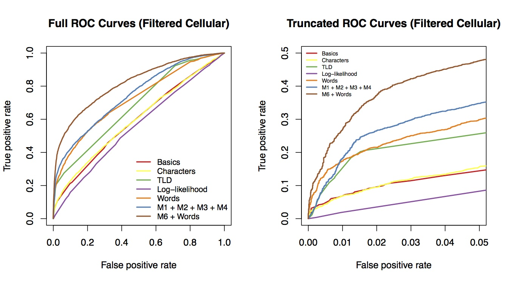

Kenny Shirley
Kenny ShirleyStatistician
I’m a research scientist in the demand forecasting group at Amazon in New York City. My research interests (past and present) include hierarchical Bayesian modeling, MCMC methods, data and model visualization, text mining, and other topics related to applied statistics.
This is my personal site, which is a mix of statistics research, side projects (mostly sports-related) and other stuff.
NEWS
6/26/2016:
After 6.5 wonderful years in the statistics research department at AT&T Labs, I was ready for something new, and so I’ve joined the demand forecasting team at Amazon in New York City. I’ll be doing demand forecasting for retail products within the supply chain organization (aka SCOT) with colleagues that include Dean Foster and Lee Dicker. I’m excited for the new challenge!
1/12/2016:
This is a very belated post to share the slides from my August 2015 JSM talk about my summarytrees R package. I've finally converted our code to compute and visualize summary trees (co-written with Howard Karloff) into an R package which contains a mixture of R, C, and javascript code. The GitHub repo for the package is here. It's not quite a finished product; I plan to clean up some of the internals before I submit it to CRAN.
That being said, I'd love any comments, suggestions, or feedback on the current development version.
For a couple of demos, check out one of these:
- The Carl Gauss subtree of the Mathematics Genealogy Project
- The Sports subtree of the DMOZ directory of webpages
[Pictured: 18-node maximum entropy summary tree of DMOZ web directory]
5/14/2015:
Next week Thursday (May 21st) my colleague Wei Wang will present our paper "Breaking Bad: Detecting Malicious Domains Using Word Segmentation" at the Web 2.0 Security and Privacy (W2SP) workshop in San Jose, CA. In the paper we describe how we segmented a set of domain names into individual tokens, and then used the resulting bag of words as an additional feature set to improve the predictive accuracy of our model to detect malicious domains. The outcome variable ("maliciousness") was gathered from the Web of Trust, a crowdsourced website reputation rating service.
Some highlights of this project were:
- Reading Peter Norvig's chapter of the book Beautiful Data, which includes a description of the word segmentation algorithm, along with python code to implement it. On a side note, this is the second place I've seen an example of using statistics to break a substitution cipher. The first time was in this very entertaining paper by Persi Diaconis.
- Using the R package glmnet to do lasso-penalized logistic regression (a really nice way to handle large numbers of features).
- Discovering that the names of certain basketball players are strongly associated with malicious domains (at least according to our definition of "malicious"), including "kobe", "jordan", and "lebron". I guess Kevin Durant and Carmelo Anthony are probably jealous that their names aren't yet showing up in the domain names of phishing websites as often as their peers.

1/28/2015:
I'm happy to report that my R package for visualizing topic models, LDAvis, is now on CRAN! It's a D3.js interactive visualization that's designed help you interpret the topics in a topic model fit to a corpus of text using LDA. I co-wrote it with Carson Sievert, and we also wrote a paper about it (including a user study) that we shared at the 2014 ACL Workshop on Interactive Language Learning, Visualization, and Interfaces in Baltimore last June. Here are the relevant links -- we'd love to hear any questions/comments/feedback.
- The package is hosted on github here.
- There is a demo of the visualization here, where we visualize the fit of a 40-topic model to the Twenty Newsgroups data.
- Here is the paper.
For older news, click here.